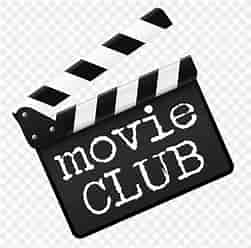

 Theater Talks
About Us
Welcome to Theater Talks, your source for movie reviews, ratings, and entertainment news. We are passionate about movies and committed to providing you with the latest insights and information about the world of cinema.
Our Team

John Doe
Movie Critic Movie critics play a vital role in the realm of cinema and journalism by engaging in several key responsibilities. First and foremost, their primary duty involves the meticulous observation of movies, encompassing both new releases and classic films. A movie critic must possess a profound and extensive knowledge of diverse genres, cinematic styles, and different eras within the film industry. Subsequently, they embark on the task of dissecting films, scrutinizing elements such as plot development, character arcs, dialogue, cinematography, direction, editing, and sound design. By analyzing these components, critics evaluate how they contribute to the overall impact and quality of the movie. Following their thorough assessment, critics craft well-informed and critical reviews of the films they've watched. These reviews serve as a valuable resource for the audience, often finding their way into newspapers, magazines, websites, or being broadcasted on television or radio. Additionally, critics may assign ratings or scores to movies, aiding viewers in gauging their potential enjoyment
Jane Smith
Editor An editor on a movie review website holds a pivotal role in ensuring the quality and coherence of the content presented to the audience. Their primary responsibility is to refine and polish the reviews written by movie critics, making them engaging, concise, and error-free. Editors carefully assess the structure and flow of the reviews, ensuring that they provide a clear and coherent analysis of the film. They check for grammatical and spelling errors, as well as consistency in style and tone throughout the content Editors work closely with movie critics to maintain the publication's editorial standards and uphold the publication's voice and brand. They may suggest revisions, rephrasing, or restructuring of sentences or paragraphs to enhance readability and comprehension. Editors also verify factual accuracy, such as the correct titles, names, and release dates of movies. Additionally, editors may curate and organize the content on the website, ensuring that reviews are categorized appropriately and that the website's layout is user-friendly. They often collaborate with the editorial team to plan and schedule the publication of reviews, taking into account the release dates of movies and the website's editorial calendar. In summary, an editor in a movie review web page plays a crucial role in refining and enhancing the quality of movie reviews, making them more accessible and enjoyable for the audience while maintaining editorial standards and consistency across the platform.
David Johnson
Content writerA content writer on a movie review website plays a vital role in crafting engaging and informative content that captivates readers and provides valuable insights into the world of cinema. Their primary responsibility is to generate original and compelling written material, including movie reviews, articles, and features. Content writers collaborate closely with movie critics to transform their assessments and analyses into well-structured and engaging reviews that cater to a diverse audience. They have the crucial task of translating the critic's perspectives and opinions into accessible and reader-friendly language, ensuring that the reviews are both informative and enjoyable to read. Furthermore, content writers often contribute additional content beyond reviews, such as articles on film-related topics, interviews with filmmakers, or thematic analyses of movie trends. They conduct research to stay informed about the latest developments in the film industry and incorporate relevant information into their writing. Creativity is a key attribute of a content writer, as they strive to bring a unique and fresh perspective to their work. They aim to capture the essence of a film and convey its impact on audiences while respecting the diverse tastes and preferences of readers. In summary, a content writer in a movie review page serves as a bridge between the critic's expertise and the audience's curiosity, crafting engaging and informative content that enriches the reader's understanding and appreciation of cinema. They play a crucial role in shaping the voice and content of the website, making it a valuable resource for movie enthusiasts.
"Movies are a window to the soul of humanity, and through Theater Talks, we aim to provide you with the best view."